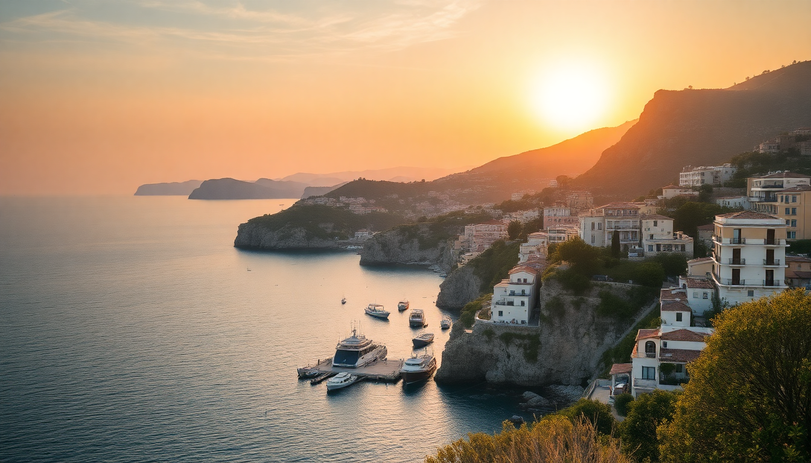

Best Beaches in Italy: Sardinia, Sicily & Puglia Guide

I spent three summers bouncing between Sardinia, Sicily, and Puglia, chasing the best swimming spots without the crowds. This guide cuts through the Instagram hype and tells you which beaches are worth the drive, which ones you can skip, and where to eat after a long day in the sun.
What are the best beaches in Sardinia?
Sardinia has the most famous coastline in Italy, but not every beach lives up to the photos. The real magic is on the northeast coast, around the Costa Smeralda, and in the less-visited south near Chia.
Top Sardinian beaches I actually recommend:
- Cala Mariolu – Only reachable by boat from Cala Gonone. Clear water, smooth pebbles, and fewer people if you go early.
- Spiaggia della Pelosa – Stunning white sand near Stintino, but gets packed by 10am. Go on a weekday in June.
- Cala Coticcio – Often called “Tahiti” on Caprera island. Requires a permit (book online in summer) or a hike.
- Chia Beach – South coast near Cagliari. Long sand dunes, turquoise water, and less wind than the north.
- Su Giudeu – Also near Chia. Shallow for kids, with a small island you can wade to at low tide.
I skipped Cala Brandinchi (too crowded) and Porto Pollo (better for windsurfers than swimmers). If you base yourself in Olbia, rent a car—buses are slow and infrequent.
What are the best beaches in Sicily?
Sicily’s beaches are more varied than Sardinia’s. You get volcanic black sand near Catania, white pebbles in the Aeolian Islands, and long sandy stretches near Palermo. The water is warmer here, especially in August.
Top Sicilian beaches I actually recommend:
- San Vito Lo Capo – Near Trapani. Long sandy bay, backed by mountains. Best for families. Try the couscous at Cous Cous Fest in September.
- Cala Rossa – On Favignana island (ferry from Trapani). Bright blue water, limestone cliffs. Arrive before 9am or stay overnight.
- Isola Bella – Just outside Taormina. Tiny pebble beach connected to a nature reserve. Overpriced loungers but worth a quick swim.
- Scala dei Turchi – White cliffs near Agrigento. Not a classic beach, but you can swim off the rock steps. Go at sunset to avoid tour buses.
- Spiaggia dei Conigli – Near Lampedusa (fly from Palermo or Catania). Possibly the clearest water in Italy. Protected area, limited daily entry.
I skipped Mondello (too many hawkers) and Cefalù beach (overrated, but the town itself is worth a visit). For a quiet swim, head to Vendicari Nature Reserve near Noto—no facilities, just dunes and flamingos.
What are the best beaches in Puglia?
Puglia’s beaches are split between the rocky Adriatic coast (Polignano a Mare, Ostuni) and the sandy Ionian side (Gallipoli, Porto Cesareo). The water is shallow and calm, perfect for long swims.
Top Puglian beaches I actually recommend:
- Cala Porto – In Polignano a Mare. Small cove right under the old town cliffs. Crowded but iconic. Swim at dawn.
- Torre dell’Orso – Near Lecce. Long white sand, two rock stacks in the water. Free parking if you arrive before 9am.
- Punta Prosciutto – Ionian coast, south of Porto Cesareo. Caribbean-style water, shallow for a kilometer. Best beach in Puglia for pure swimming.
- Baia dei Turchi – Near Otranto. Pine forest behind the sand, crystal water. No umbrellas—bring your own shade.
- Spiaggia di Marina Grande – In Gallipoli. Sandy, family-friendly, with a castle backdrop. Avoid the paid beach clubs—walk 100m south for free access.
I skipped the famous Grotta della Poesia as a swim spot (too many people jumping in). Better to view it from the platform and swim at nearby Torre Lapillo.
When is the best time to visit these beaches?
June and September are the sweet spots. July and August bring crowds, heat, and inflated prices. I learned this the hard way when I paid €50 for two loungers at San Vito Lo Capo in August.
Month-by-month breakdown:
- May – Water is cold (18-20°C), but beaches are empty. Good for hiking and photography.
- June – Water warms up. Sardinia and Puglia are still quiet. Sicily gets busy by late June.
- July – Peak season. Book everything in advance. Avoid weekends.
- August – Avoid if you dislike crowds. Ferries to Aeolian Islands sell out days ahead.
- September – Best month. Water is warmest (25-26°C), prices drop, and schools are back in session.
In Puglia, I found September ideal because the sea is calm and the towns like Lecce and Ostuni are less frantic.
How do I get between Sardinia, Sicily, and Puglia?
You can fly between the islands, but I prefer the ferries for the views. Grimaldi Lines and Tirrenia run overnight routes from Civitavecchia (Rome) to Olbia and from Naples to Palermo.
Practical logistics:
- Sardinia to Sicily – No direct ferry. Fly from Olbia or Cagliari to Palermo or Catania (1 hour, €40-80).
- Sicily to Puglia – Ferry from Messina to Villa San Giovanni (mainland), then drive 4 hours to Bari. Or fly Catania to Bari (1 hour).
- Puglia to Sardinia – Fly Bari to Cagliari or Olbia (1.5 hours, €50-100). No direct ferry.
- Car rental – Rent in each region separately. One-way rentals across islands are expensive. I used Avis in Olbia and Hertz in Bari—both fine.
I drove from Bari to Polignano a Mare in 45 minutes on the SS16. The train from Lecce to Otranto takes 2 hours and costs €8—good if you don’t want a car.
Are there any hidden gem beaches I should know about?
Yes, but most “hidden” beaches are now on TikTok. The real gems require a walk or a boat.
Off-the-radar options:
- Cala dei Gabbiani – Near Baunei, Sardinia. 45-minute hike down from the village. No facilities, but you’ll have the cove to yourself.
- Cala dell’Uzzo – Near San Vito Lo Capo, Sicily. Hike through the Zingaro Nature Reserve (1.5 hours one way). Bring water and snacks.
- Cala dell’Acquaviva – Near Otranto, Puglia. Small pebble beach under a cliff with a freshwater spring. Swim where cold and warm water mix.
I found Cala dell’Uzzo worth the hike because you pass three smaller beaches along the way. Start at 7am to avoid the midday heat.
FAQ
Which Italian region has the clearest water? Sardinia, specifically the Golfo di Orosei around Cala Mariolu and Cala Luna. The water visibility often exceeds 30 meters. Sicily’s Lampedusa comes close, but it’s a separate island requiring a flight.
Can I visit these beaches without a car? Yes, but it’s harder. Sardinia’s bus network (ARST) reaches most beaches from Cagliari or Olbia, but frequency drops after 2pm. In Puglia, the Salento region has summer bus routes from Lecce to Otranto and Gallipoli. Sicily’s trains serve Palermo and Catania, but you’ll need a bus or taxi for San Vito Lo Capo.
What should I pack for a beach trip to Italy? A good reef-safe sunscreen (Italian pharmacies sell Bionike and Avene), water shoes for pebble beaches, a microfibre towel, and a reusable water bottle. Most beaches have limited shade—bring a small umbrella or a sun hat.
Conclusion
- Sardinia wins for clarity and drama, but go in June or September. Skip the Costa Smeralda crowds and head to Chia or Cala Gonone.
- Sicily offers variety—black sand, white cliffs, and island escapes. San Vito Lo Capo and Favignana are the best bets.
- Puglia is the most relaxed. Punta Prosciutto and Torre dell’Orso give you Caribbean water without the flight.
- Rent a car in each region, book ferries early for August, and always carry cash for beachside cafés and parking.
- The best beach I found? Cala Mariolu in Sardinia. Perfect water, no loud music, and a tiny pebble bar selling cold beer.